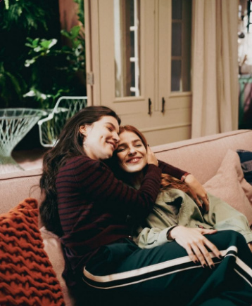
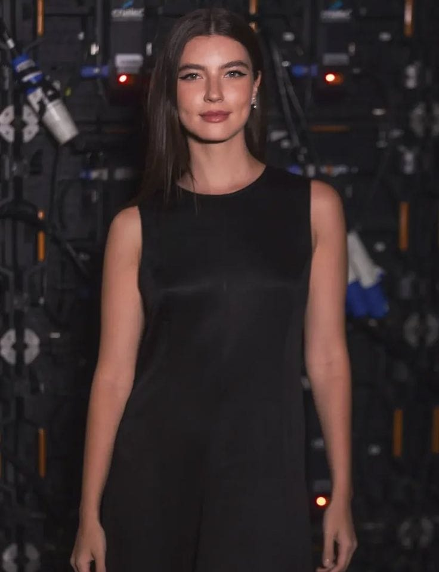
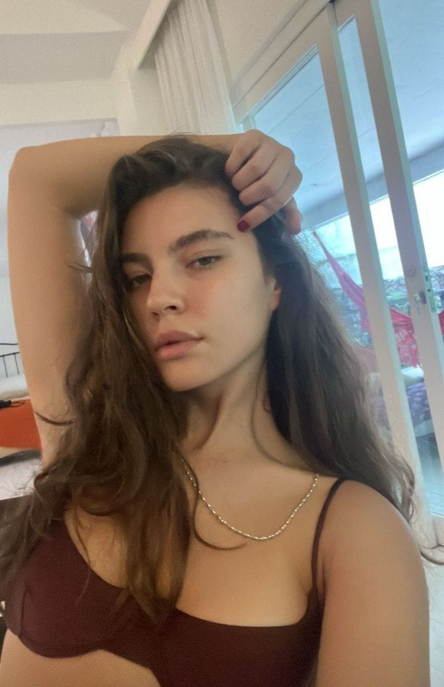
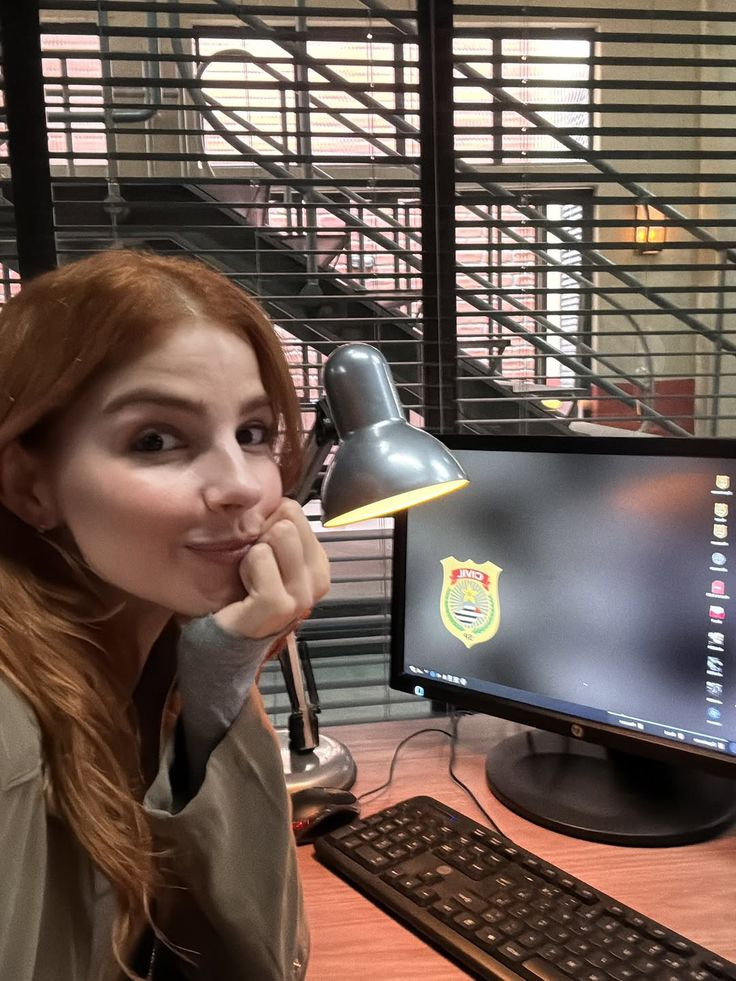

THE DEVIL WEARS YOUR SMILE · FUNDAÇÃO FERETTE

ROMANCE · SUSPENSE · INVESTIGAÇÃO
The Devil
Wears Your Smile
6 capítulos disponíveis 30 capítulos planejados
FUNDAÇÃO FERETTE · ARQUIVO DE LOTES
Capítulos
Cada capítulo está guardado em uma embalagem lacrada. Escolha um lote disponível e rompa o lacre para começar a leitura.
FUNDAÇÃO FERETTE · LINHA DE PRODUÇÃO
Fábrica da Lorena
Organize as caixas dos lotes originais e falsificados. Quando a investigadora aparecer, cuidado: a linha acelera!
Quadro de personagens

Lorena Ferette
Flora Ferette
Eduarda FragosoCelina Martins